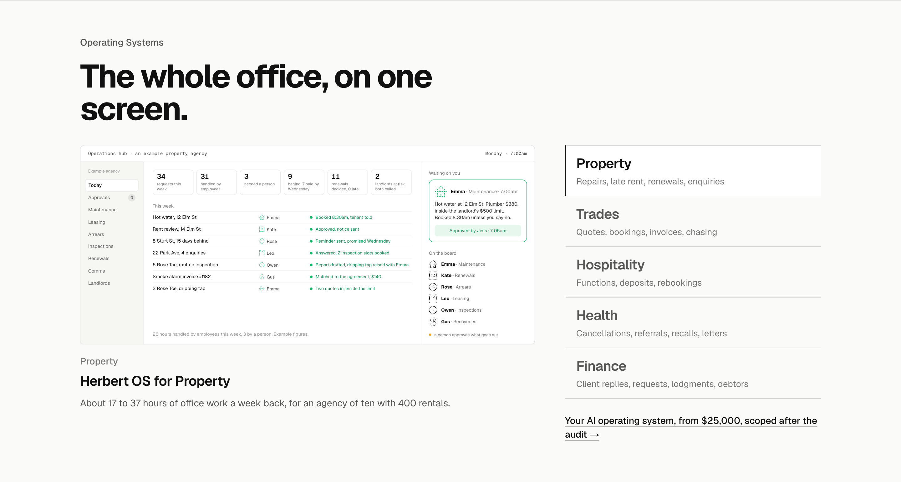
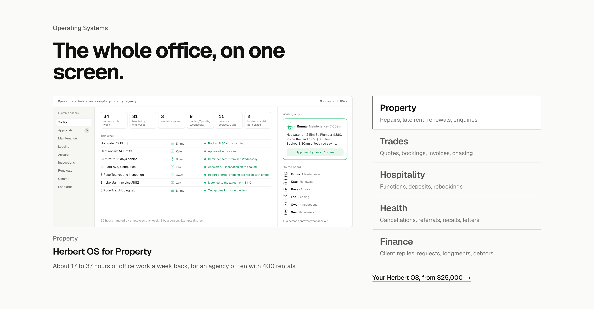
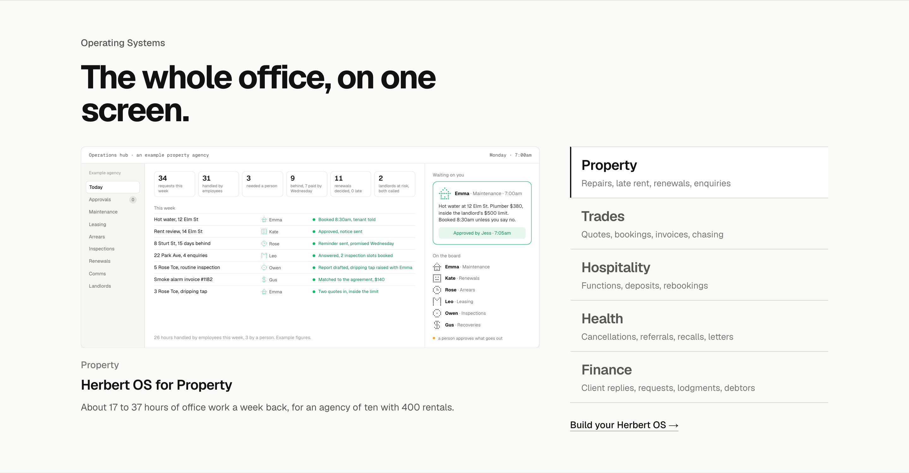

Operating Systems: the close’s wording three ways
The one link under the list, on the section as built (the audit tag under the screen is gone). Only the link’s words and where it goes change.
Today“Your AI operating system, from $25,000, scoped after the audit” to /pricingThe rung, its price and its condition. Long, and it names the category rather than the product the section just named five times.

1. The name and the price“Your Herbert OS, from $25,000” to /pricingThe product name and what it costs, nothing else; the same shape as the AI Employees close (“Your first one is $3,500, live in 14 days”). Short enough to read in one glance. Recommended.

2. The action“Build your Herbert OS” to /pilot#bookA verb instead of a price, to the audit booking, since that is where a build starts. Warmer, but the cost question it leaves open is the one an owner has.

3. The question“What would your Herbert OS cost?” to /pricingAsks the owner’s own question and answers it on the pricing page. Invites the click; the page has to land the $25,000 well.